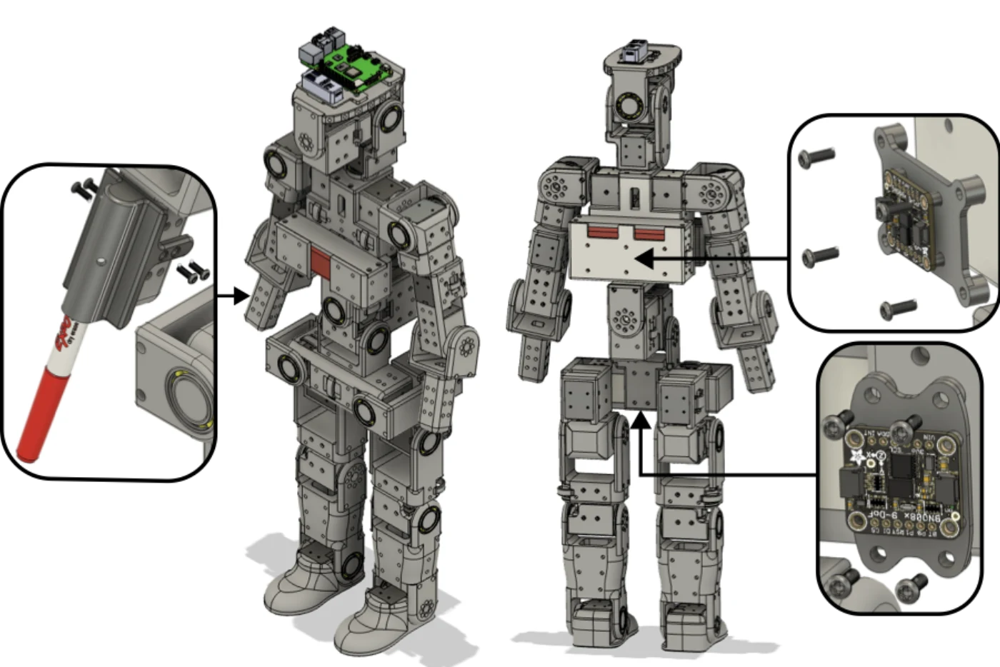

Modular humanoid hardware
24 actuated joints, bearing-supported links, and accessible mounting points for new experiments.
An open platform for humanoid research
An Open-Source and
Customizable Humanoid Robot
Built to be understood, modified, and put in motion. A modular humanoid connecting open hardware with learning-based control.

Designed for exploration.
Open to modification.
Actuated joints
Height
Weight
Policy control rate
Open hardware.
Open software.
01 / The research
How do we make humanoid research easier to reproduce, extend, and share?
Swenoid combines off-the-shelf components with 3D-printed structural parts in a 24-degree-of-freedom humanoid. Threaded mounting points make room for new tools, sensors, and protective structures. A CAD-derived simulation model connects the physical design to reproducible experiments.
We study inverse-kinematics drawing, velocity-conditioned locomotion, and motion tracking. Policies trained in simulation transfer zero-shot to hardware, with an additional qualitative demonstration of real-time upper-body imitation from video.
We present Swenoid, a 24-degree-of-freedom humanoid robot with off-the-shelf components and 3D-printed structural parts, designed as an open-source platform for research on locomotion and whole-body control. Swenoid emphasizes a modular mechanical design that uses threaded inserts to support rapid reconfiguration of end-effectors, sensors, and protective structures. We provide a simulation model that enables reproducible simulation studies. Swenoid is evaluated on three tasks: (i) an inverse-kinematics drawing task, (ii) velocity-conditioned locomotion controllers and (iii) motion tracking controllers trained on a human motion dataset retargeted to our robot. Policies transfer zero-shot to hardware, demonstrating velocity-conditioned walking and qualitatively evaluating real-time upper-body imitation from video. Together, these results position Swenoid as an open platform for studying sim-to-real transfer, imitation learning, and whole-body humanoid control.
24 actuated joints, bearing-supported links, and accessible mounting points for new experiments.
From annotated CAD to an MJCF simulation model, policy training, and physical deployment.
Drawing, walking, and motion tracking connect simulation studies to physical behavior.
02 / Physical design

Off-the-shelf Dynamixel actuators directly drive each link through their geared outputs. External ball bearings support the joints without adding external transmissions.
Three neck joints enable expressive head movement, while the forearms accept printed tool mounts. A Raspberry Pi 5 and U2D2 sit on the head; a pelvis-mounted IMU supplies orientation measurements.
03 / From design to motion
Design the robot. Build its simulation model.
Train in simulation. Run on hardware.
Model the mechanical assembly and export STEP geometry.
Add joint axes and measured part masses with CADConversion.
Export an MJCF model for simulation in MuJoCo.
Train with PPO using mjlab and RSL-RL.
Transfer the trained policies zero-shot to the physical robot.
Learning to move. The paper uses 4,096 parallel environments, a 5 ms simulation step, and a 50 Hz control policy. Motion tracking adds reference joint positions and velocities to the robot’s proprioceptive observations.
CADConversion04 / Experimental evaluation
Three evaluated tasks.
One qualitative live-imitation demonstration.
01 / Locomotion
A velocity-conditioned policy controls all 24 joints. Training includes forward, lateral, backward, and yaw commands; the reported hardware evaluation focuses on forward walking and forward–turning.
These are commanded speeds, not measured hardware speeds. Mean hardware behavior resembles simulation, with relatively high variation between trials. Ground paths use an approximate video-derived proxy.
02 / Inverse kinematics
A printed pen attachment demonstrates the modular forearm interface. Across ten trials of an 80 mm target circle, the robot repeatedly draws a slightly elongated ellipse.
Low variation indicates repeatability, while the consistent elongation suggests systematic error. The experiment does not isolate calibration, compliance, actuator tracking, or board alignment.
03 / Motion tracking
A single-motion policy follows a dance sequence using joint-position and joint-velocity references. General motion tracking extends this interface to a retargeted AMASS motion collection.
Four of the nine hardware attempts ended in falls. Tracking errors in the paper are reported only for the five complete trials. Foot contact, actuator modeling, and IMU noise remain possible sources of error.
04 / Qualitative demonstration
A webcam captures a person’s motion. MediaPipe Pose estimates the human pose, GMR retargets the upper body, and a general motion-tracking policy controls the robot while the lower-body reference is held fixed.
The observed robot motions are slower and smaller than the human reference, with a stable lower-body posture. This demonstration is qualitative; the paper does not report a live-imitation accuracy or latency benchmark.
Videos illustrate the project’s demonstrations. They are not presented as recordings of every trial in the paper.
05 / Video collection
Every video from the original project collection.
Hardware, simulation, and the steps in between.
The collection includes earlier development footage. In particular, the Isaac Gym wave clip predates the paper’s mjlab training workflow.


06 / Open resources
Explore the design and control stack,
or contribute your next experiment.
MuJoCo models, policy training, retargeting tools, and deployment.
MIT-licensed STEP assembly. Print exports and assembly documentation are in progress.
Annotate CAD geometry with joints and masses to build a simulation model.
The public software release documents its supported workflows. Live camera retargeting and the real-time imitation pipeline are not included in that release.
Cite this work
Martin Orrje, Arvid Eriksson, and David Broman
Department of Computing and Learning Systems
KTH Royal Institute of Technology
@misc{orrje_swenoid,
title = {Swenoid: An Open-Source and
Customizable Humanoid Robot},
author = {Orrje, Martin and Eriksson, Arvid
and Broman, David},
note = {Manuscript}
}